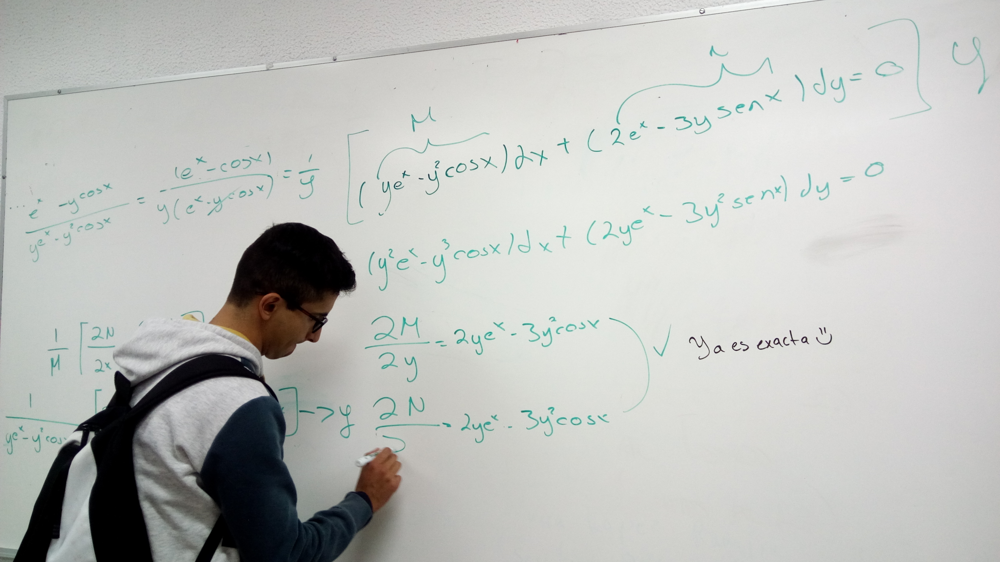

¡Le doy la bienvenida!
Soy un entusiasta de la computación que busca compartir el conocimiento y las habilidades adquiridas a lo largo de mi formación profesional. Espero que mi sitio web le sea informativo y le permita resolver diferentes problemas de software y hardware.
